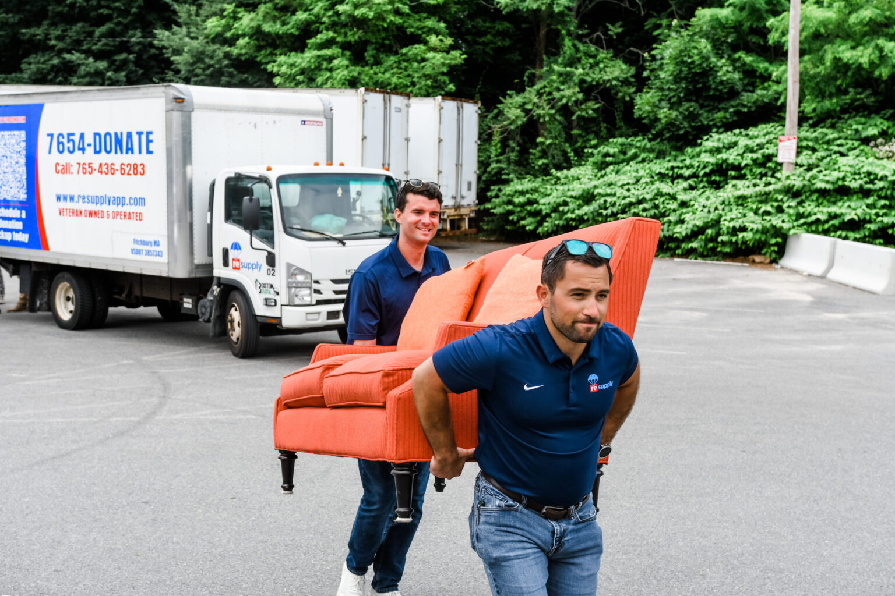
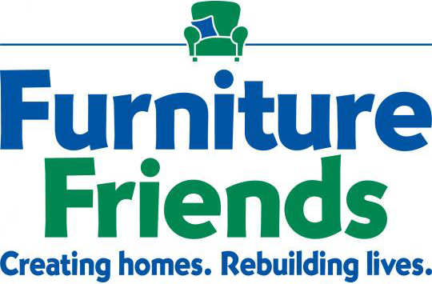
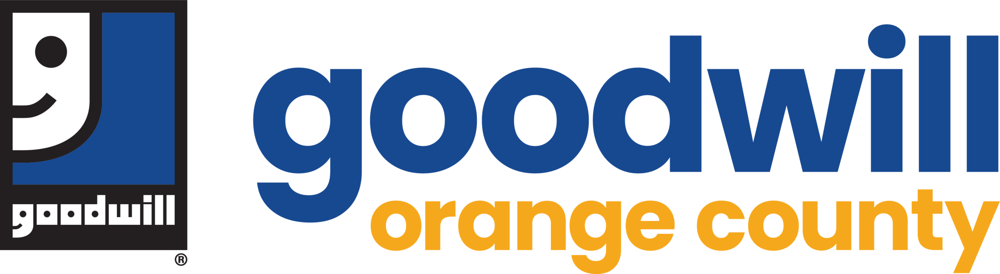
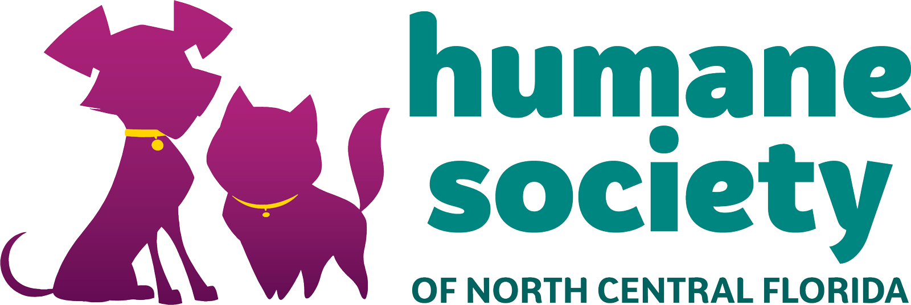
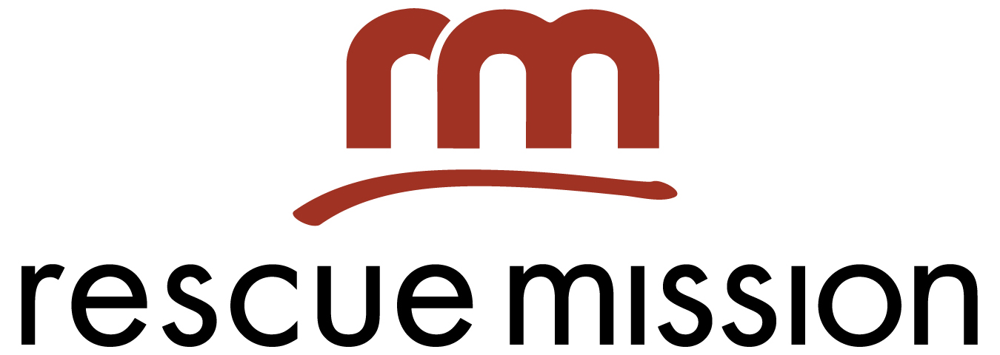
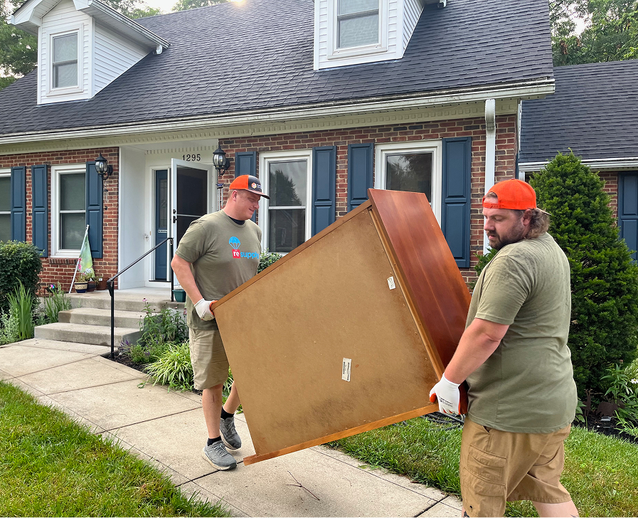
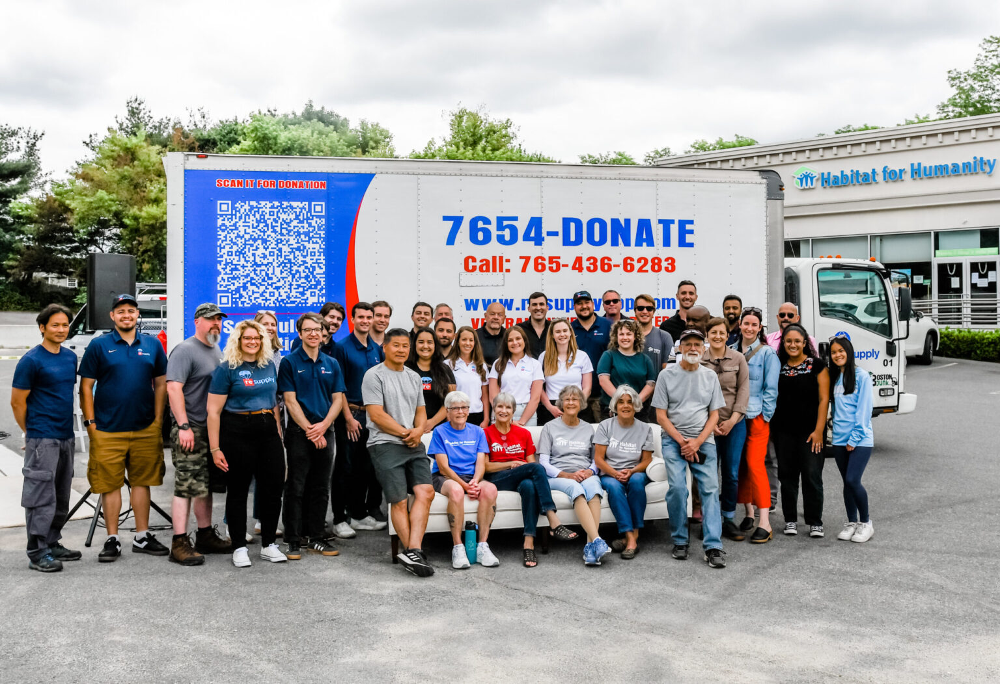
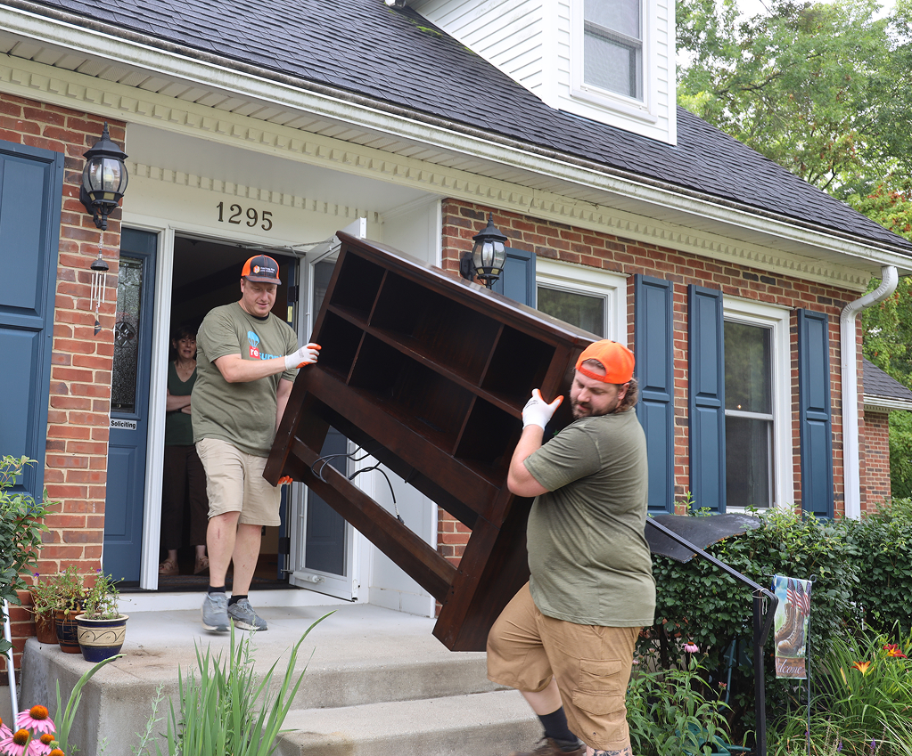
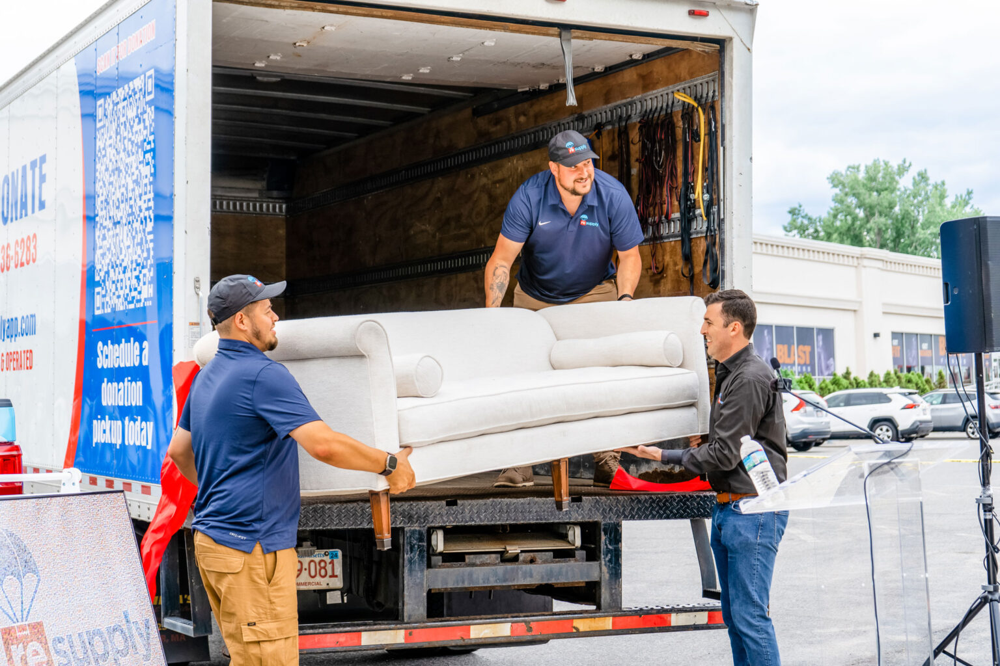

Easy Booking
- Book online or over the phone
- Pickups scheduled in 24-48 hours
- Upfront, transparent pricing
Veteran Founded • Service Driven
ReSupply is Trusted by 3,000+ Charity Partners Nationwide.
Your couch gets carried out, loaded, and delivered to a Boston charity, without you lifting an armrest.
Schedule A Pickup
Rated Excellent
across 61,264 reviews




Pickup Process
You can schedule a priority donation pickup with ReSupply online, or contact us at (765) 436-6283.
Pickup scheduling is flexible based on local availability. In most service areas, same-day or next-day pickup is available.
Items should be clean, usable, and in good condition so they can continue serving local families and organizations.
Donations in Boston go directly to vetted local charity partners doing meaningful work in your region. Every partner is accountable. Every pickup is tracked.
Every donor receives a tax receipt confirming their contribution.
Reviews
John and Juan were very helpful and professional while helping remove a couch from my home. Will use them again.
Superbly organized! Excellent communication, easy access to documents, flexible, and very upfront about all the details. The pickup service that they organized also had great communication skills, arrived on time per their notifications and did a fabulous job getting a very large sofa sleeper out of a middle bedroom. They were very kind and personable and very professional. I will definitely use the service again!
Great. Super nice guys. SUPER HEAVY sofa and they got it out with no damage.
The drivers were absolutely terrific. Friendly, professional, and they worked hard to get a large and ungainly sofa out of my basement. I was not expecting the pick up to be so pleasant — they made it so!
Great wonderful service. Handled our giant sectional couch like it was nothing. Highly recommend! And will use again in the future.
The two movers worked hard on a challenging sofa. They also cleaned everything up afterward. Thanks so much!
Marvelle provided an excellent service, great communication prior to arrival, quickly moved the couch and chair with a positive attitude! The quote was exact and the payment process was so easy online.
The guys who picked up our sofa were friendly and polite. They arrived on time and promptly and without any issues removed our donation. Would use this service again.
Service Overview
Boston donors know the drill: narrow streets, walk-ups, and no easy way to get a sofa from Beacon Hill or Southie to a charity that can use it. ReSupply solves that with scheduled donation pickups across all 35 covered Boston zip codes, from Dorchester to Charlestown. Licensed and insured pickup teams carry items down the stairs, load them, and deliver them to local nonprofit partners.


Giving Back
Donations booked in Boston stay in the Boston area, matched to one of the 3,000 charity partners ReSupply works with across 48 states. Teams are licensed and insured, service runs to any floor of the building, and every donor receives a tax receipt. ReSupply was founded by military veterans, and pickups run with the same precision they brought to their service.
ReSupply works across charity categories: shelters, workforce programs, faith-based programs, hospice resale operations, and family services nonprofits.
Every partner is vetted. Every pickup is tracked. Every donor receives a tax receipt confirming their contribution.
Schedule A PickupHeavy Lifting
Booking takes minutes: list your items, pick a window, and see your confirmed price upfront. On pickup day a licensed and insured team arrives on time, carries items down from third-floor walk-ups or brownstone basements, and delivers them to a Boston-area nonprofit partner. Your tax-deductible donation receipt follows by email.
The furniture you are ready to pass on could be the piece that makes someone else's new place feel like home.
Depending on your region, that might mean:

Don't junk it. Donating items keep them out of landfill and gives them a second life. Unwanted goods transform it into a resource for someone in need. Support the environment, help the community.
We have delivered $90M in resources to local charities.
We've helped divert 80M pounds of waste from landfills.
Your donations support 3000+ nonprofit locations nationwide.
Enter your ZIP to check availability in your area.
Sofas, sectionals, loveseats, sleeper sofas, and recliners are the most requested donation items in Boston. ReSupply teams bring the equipment and manpower to move couches through tight hallways, stairwells, and doorways, then deliver them to a nonprofit partner that can put them to use.
In the rare case that an item cannot be accepted by a charity near you, we'll take it to be recycled.

From Beacon Hill walk-ups to Dorchester triple-deckers, we handle the stairs, the disassembly, and the delivery to a local charity.
Book online in minutes or call (765) 436-6283, open 9 a.m. to 8 p.m. Eastern, 7 days a week. Walk-up or elevator building, the team comes to you.
Call (765) 436-6283 or book online today to schedule convenient donation pickup in Boston.
ReSupply makes donation pickup simple in Boston and across 48 states. Whether you are clearing a whole house before a move or a single dresser from a downsizing, we handle the scheduling, the heavy lifting, and the delivery to a local charity. Giving made simple, the way it should be.
Looking for something else in Boston? We also pick up couches, mattresses, and appliances, or see all Boston donation pickup services.
Donation Pickup Available in 48 States
Have questions about donation pickup in Boston? Our teams handle the heavy lifting from inside your home and deliver straight to local Boston-area charities. Book online or by phone today.
Yes. Sectionals, sleeper sofas, loveseats, and recliners all qualify as long as they are clean, usable, and in good condition. The team disassembles sectionals when needed.
Priority pickups start at $99, and you see your exact price before you confirm. The price covers the team, the carry down however many flights your building has, transport, and delivery to a nonprofit partner. No surprises at the curb.
Book online in a few minutes or call (765) 436-6283, open 9 a.m. to 8 p.m. Eastern, 7 days a week. Choose the window that fits your week and the team handles the rest, stairs included.